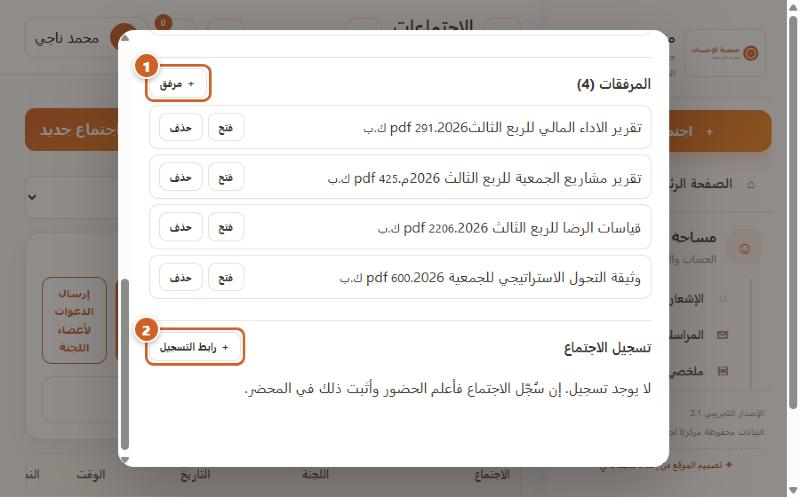
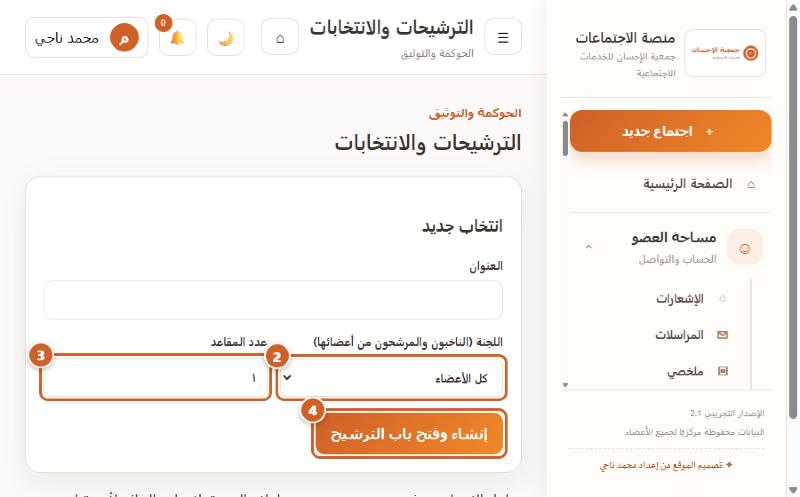
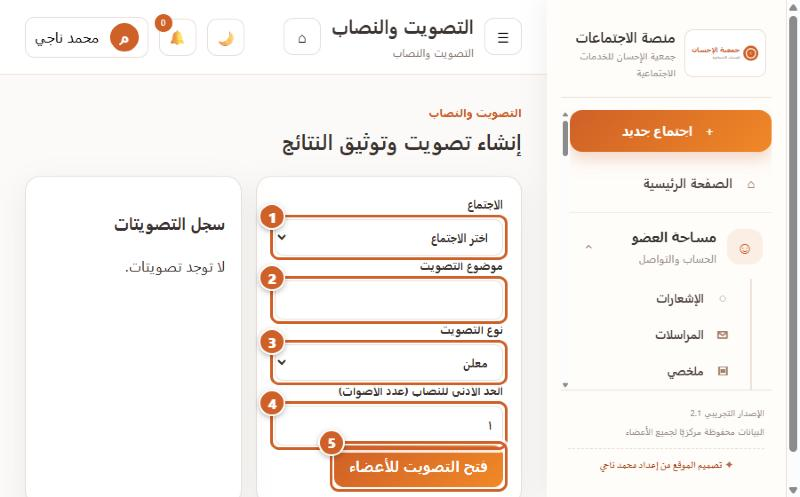
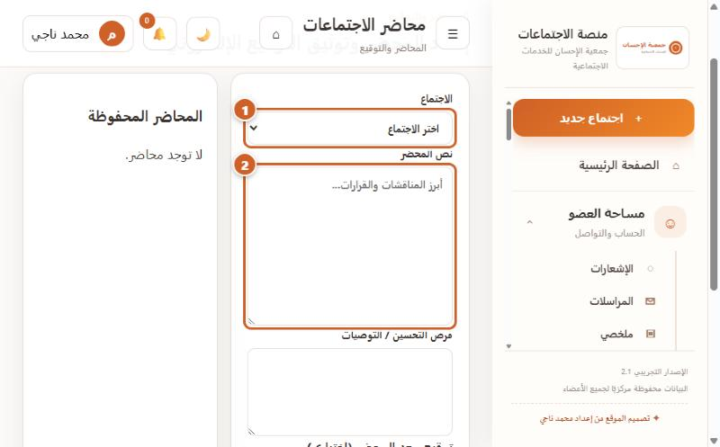
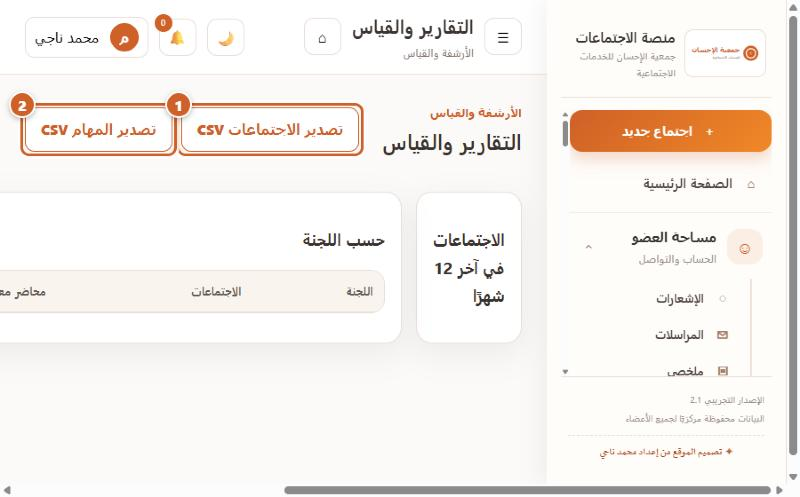
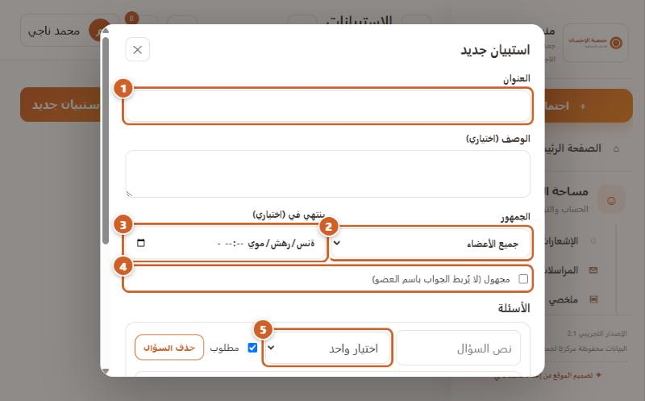
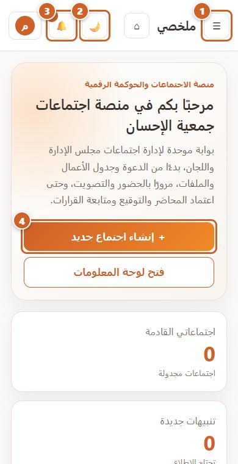
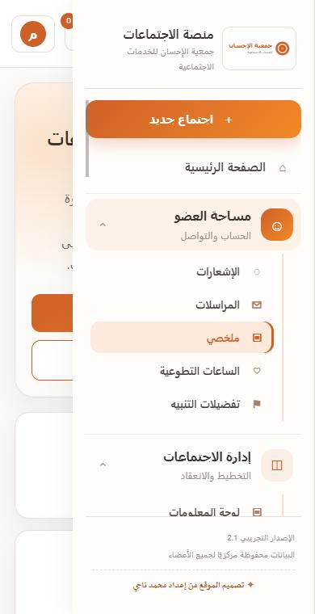

منصة إدارة الاجتماعات والقرارات — دليل المستخدم والإدارة
النسخة الأولى (مسودة 0.2) · 29 أكتوبر 2026
النسخة الأولى تغطي الخدمات التي أمكن تصويرها من الموقع الحي. باقي الخدمات مدرجة في سجل التحقق بحالتها. اسم المنصة ورمز QR وخط الجمعية بانتظار الاعتماد.
منصة اجتماعات جمعية الإحسان · الدليل المصوّرالمقدمة والفهرس
مقدمة وفهرس
المنصة نظام عربي لإدارة اجتماعات المجلس واللجان والجمعية العمومية: جدولة الاجتماع ودعوة الأعضاء، وتسجيل الحضور، والتصويت، والمحاضر والتوقيع الإلكتروني، ثم تحويل القرارات إلى مهام تُتابَع حتى الإقفال. لا تبثّ المنصة فيديو؛ يُعقد الاجتماع الافتراضي عبر رابط خارجي (Zoom أو Teams أو Meet).
رموز الدليل:مُصوَّر من الموقع الحيلم يكتمل اختبارهقيد التطوير · الدائرة البرتقالية المرقّمة تحدد ترتيب الأزرار والحقول في الصورة، والإطار البرتقالي يحدد العنصر المقصود.
حدود هذه النسخة: اللقطات حقيقية بحساب مدير على الموقع الحي، ودقتها 800 بكسل عرضًا (لقطات الهاتف 390 بكسل). لم تُنفَّذ عمليات الحفظ أو الحذف أثناء التصوير حتى لا تتأثر بيانات الجمعية، فصور «النتيجة بعد الحفظ» غير موجودة. تحتوي بعض اللقطات أسماء بنود ومرفقات من اجتماع قائم، وتُراجَع قبل النشر العام.
الباب
الخدمة
الحالة في هذه النسخة
3
إنشاء اجتماع جديد (نموذج مصوّر منفصل: نموذج-إنشاء-اجتماع.pdf)، إدارة الاجتماع: التعديل والحذف وجدول الأعمال والمرفقات وتسجيل الاجتماع
مُصوَّر
5
الأعضاء: التصفح والبحث، الإضافة اليدوية، الاستيراد من Excel
مُصوَّر
7
التصويت والنصاب (نموذج الإنشاء)
مُصوَّر
8
المحاضر والتوقيع الإلكتروني
مُصوَّر
9
القرارات ومتابعة التنفيذ
لوحة فارغة لحساب مدير النظام (ملاحظة 3)
10
الجهات (مجلس، لجان، جمعية عمومية) والترشيحات والانتخابات
مُصوَّر
12
الإشعارات وتفضيلات التنبيه
مُصوَّر
13
التقارير والتصدير
مُصوَّر
14
الاستبيانات، التقويم وجدولة الاجتماعات
مُصوَّر
11
الاستخدام عبر الهاتف
مُصوَّر (شاشتان)
—
أثناء الاجتماع، مركز الذكاء، غرفة البيانات، الحوكمة والأمن، مركز المرفقات
قيد التطوير (انظر الملاحظة 2)
الإصدار 0.2 (مسودة)جمعية الإحسان للخدمات الاجتماعية
منصة اجتماعات جمعية الإحسان · الباب الثالث: إدارة الاجتماعاتإدارة اجتماع قائم
إدارة اجتماع قائم: التعديل والحذف وجدول الأعمال والمرفقات والتسجيل
المستخدمون: منشئ الاجتماع أو المدير أو أمين السرالمسار: الاجتماعات ← زر «إدارة» في صف الاجتماع
اضغط إدارة في صف الاجتماع. تعديل البيانات يفتح نموذج التعديل. حذف الاجتماع نهائي ويطلب تأكيدًا. ＋ بند يضيف بندًا إلى جدول الأعمال، وزر «حذف» بجانب كل بند يزيله.
2المرفقات وتسجيل الاجتماع

الصورة 3-10: 1 «＋ مرفق»، 2 «＋ رابط التسجيل».
＋ مرفق يرفع ملفًا أو أكثر، ويفتح «فتح» الملف أو يحذفه «حذف». قسم تسجيل الاجتماع: اضغط «＋ رابط التسجيل» والصق رابط https من أداة الاجتماع مع تاريخ الاحتفاظ وملاحظة. حذف الرابط لا يحذف التسجيل نفسه.
الإصدار 0.2 (مسودة)صفحة 3
منصة اجتماعات جمعية الإحسان · الباب الخامس: الأعضاءإدارة الأعضاء
إدارة الأعضاء: التصفح والإضافة اليدوية والاستيراد من Excel
الصورة 5-1: 1 «＋ إضافة عضو يدويًا»، 2 «استيراد من Excel»، 3 البحث، 4 بطاقة جهة.
في الأعلى ثلاثة أرقام: إجمالي الأعضاء وعدد الجهات والمضافين يدويًا. اكتب في البحث اسم العضو أو جواله أو بريده. اضغط بطاقة الجهة لتظهر أسماء أعضائها ودور كل عضو، وتضغطها ثانية لطيّها. بطاقة «أعضاء بدون جهة» تضم من لم يُربط بجهة.
2إضافة عضو واستيراد قائمة
إضافة يدوية: اضغط «＋ إضافة عضو يدويًا»، واملأ الاسم (مطلوب) والوظيفة والجوال والبريد، واختر الجهات، ثم احفظ. يظهر العضو بشارة «مضاف يدويًا» مع زري تعديل وحذف. هؤلاء الأعضاء ليس لهم حساب دخول.
الاستيراد: من صفحة اللجان نزّل «نموذج Excel» للجهة، واملأه، ثم اضغط «استيراد من Excel» واختر الجهة وارفع الملف. تظهر معاينة تُعلِّم الصفوف الخاطئة والمكررة، وبعد التأكيد تظهر نتيجة كل صف (أُنشئ، رُبط، موجود، خطأ). الحد الأقصى 500 صف في العملية.
لم تُصوَّر نافذتا الإضافة والاستيراد لأن إكمالهما يغيّر بيانات الجمعية.
الإصدار 0.2 (مسودة)صفحة 4
منصة اجتماعات جمعية الإحسان · الباب العاشر: الجهاتاللجان والمجلس والجمعية العمومية
الجهات: المجلس واللجان والجمعية العمومية، والترشيحات والانتخابات
الصورة 10-1: 1 «＋ لجنة جديدة»، 2 «تعديل»، 3 «استيراد أعضاء Excel»، 4 «نموذج Excel».
لكل جهة نوع (مجلس إدارة، لجنة، جمعية عمومية) وتاريخ بداية يظهر في بطاقتها. «تعديل» يغيّر الاسم والنوع وتاريخ البداية. لأعضاء الجمعية العمومية أنشئ جهة من نوع «جمعية عمومية» ثم استورد أعضاءها.
2الترشيحات والانتخابات

الصورة 10-2: 2 اللجنة، 3 عدد المقاعد، 4 «إنشاء وفتح باب الترشيح». (حقل العنوان فوق الدائرة 2).
اكتب العنوان، واختر اللجنة (الناخبون والمرشحون من أعضائها)، وحدد عدد المقاعد، ثم اضغط «إنشاء وفتح باب الترشيح». لم تُجرَّب العملية بعد.
لا يوجد تصويت أو فرز داخل هذه الشاشة حتى الآن، وهو ما يحتاج التحقق قبل الاعتماد على المنصة لانتخابات رسمية.
الإصدار 0.2 (مسودة)صفحة 5
منصة اجتماعات جمعية الإحسان · الأبواب السابع والثامنالتصويت والمحاضر
التصويت والنصاب، والمحاضر والتوقيع
1إنشاء تصويت

الصورة 7-1: 1 الاجتماع، 2 موضوع التصويت، 3 نوع التصويت، 4 الحد الأدنى للنصاب، 5 «فتح التصويت للأعضاء».
اختر الاجتماع، واكتب موضوع التصويت، واختر النوع (الافتراضي «معلن»؛ وللتصويت السري يُختار نوعه من القائمة)، وحدد الحد الأدنى للنصاب (عدد الأصوات)، ثم اضغط «فتح التصويت للأعضاء». يظهر التصويت في «سجل التصويتات». شرط المشاركة: تسجيل حضور العضو أولًا.
2إعداد المحضر والتوقيع

الصورة 8-1: 1 الاجتماع، 2 نص المحضر.
اختر الاجتماع، واكتب نص المحضر («أبرز المناقشات والقرارات…»)، ثم فرص التحسين / التوصيات. في أسفل الصفحة مربع التوقيع (وقّع بالفأرة أو الإصبع) والزر «مسح التوقيع» والزر «حفظ المحضر». تظهر المحاضر المحفوظة في العمود المقابل.
لم يُحفظ تصويت أو محضر أثناء التصوير. اسم نوع التصويت السري في القائمة لم يُصوَّر.
الصورة 12-1: 1 قنوات الاستلام، 2 رقم الجوال، 3 «حفظ التفضيلات».
المنظِّم هو من يحدد تكرار التذكير لكل اجتماع (يوميًا، كل يومين، كل 3 أيام، أسبوعيًا، أو قبل الموعد بساعات). من هنا يختار العضو القنوات التي يقبل التنبيه عبرها: واتساب، رسالة نصية، البريد الإلكتروني، ويكتب رقم الجوال، ثم «حفظ التفضيلات».
2التقارير والتصدير

الصورة 13-1: 1 «تصدير الاجتماعات CSV»، 2 «تصدير المهام CSV».
تعرض الصفحة مؤشرات مثل الاجتماعات في آخر 12 شهرًا وتفصيلها حسب اللجنة. يصدّر الزران ملف CSV يُفتح في Excel. وفي وحدة القرارات تصدير Excel وطباعة PDF مستقلان.
الإصدار 0.2 (مسودة)صفحة 7
منصة اجتماعات جمعية الإحسان · الباب الرابع عشرالاستبيانات والتقويم
الاستبيانات والتقويم وجدولة الاجتماعات
1إنشاء استبيان

الصورة 14-1: 1 العنوان، 2 الجمهور، 3 ينتهي في، 4 مجهول، 5 نوع السؤال.
الحوكمة ← الاستبيانات ← «＋ استبيان جديد». اكتب العنوان والوصف، واختر الجمهور (جميع الأعضاء أو جهة)، وموعد الانتهاء الاختياري، ومجهول إن أردت إخفاء الأسماء. أضف الأسئلة (اختيار واحد، متعدد، تقييم 1–5، نص) بالزر «＋ سؤال»، واحفظ مسودة، ثم «نشر» ليصل إشعار للأعضاء. النتائج وتصديرها من «النتائج». استطلاع الموعد من «استطلاع المواعيد».
إدارة الاجتماعات ← جدولة الاجتماعات: تقويم شهري يمكن تصفيته حسب اللجنة، و«＋ جدولة اجتماع» لإنشاء اجتماع (مع تكرار وكشف تعارض وحجز قاعة). لم تُجرَّب عملية الجدولة.
الإصدار 0.2 (مسودة)صفحة 8
منصة اجتماعات جمعية الإحسان · الاستخدام عبر الهاتفنسخة الجوال
الاستخدام عبر الهاتف
1الصفحة الرئيسية

الصورة م-1 (390×760): 1 القائمة ☰، 2 الوضع الداكن 🌙، 3 الإشعارات 🔔، 4 «＋ إنشاء اجتماع جديد».
على الهاتف تتحول القائمة الجانبية إلى زر ☰ في أعلى الصفحة. البطاقات تتراص عموديًا، والأزرار بعرض كامل.
2القائمة

الصورة م-2: القائمة مفتوحة فوق الصفحة. الزر البرتقالي «＋ اجتماع جديد» ثم مجموعات قابلة للطي.
اضغط ☰ لفتح القائمة، واضغط عنوان المجموعة (مساحة العضو، إدارة الاجتماعات…) لتظهر خدماتها. اختيار خدمة يغلق القائمة. لم تُصوَّر بقية شاشات الجوال (الحضور، التصويت، التوقيع) بعد.
الإصدار 0.2 (مسودة)صفحة 9
منصة اجتماعات جمعية الإحسان · ملاحظات الفحصما وُجد أثناء التصوير
ملاحظات مهمة وُجدت أثناء الفحص الحي
#
الملاحظة
التفاصيل
الإجراء المقترح
1
قسم «تسجيل الاجتماع» يعمل على الموقع الحي
ظهر في نافذة «إدارة» ببيانات اجتماع قائم، وهذا يؤكد تطبيق الترحيل 013 على الإنتاج.
لا شيء
2
شاشات من النسخة التجريبية المحلية
«أثناء الاجتماع» (بدء/إيقاف/تفريغ محلي)، «مركز الذكاء الاصطناعي» (تلخيص محلي)، «غرفة البيانات الآمنة» (زر إضافة مستند تجريبي)، «مركز المرفقات» و«الحوكمة والأمن» تعمل من بيانات المتصفح المحلية ولا تُحفظ على الخادم، فلا تُوثَّق كخدمات متاحة.
إخفاؤها أو وسمها «تجريبي» لحين ربطها
3
لوحة القرارات فارغة لمدير النظام
صفحة «لوحة القرارات» تظهر بيضاء دون رسالة لحساب المدير الحالي، لأنه لا يملك دورًا في وحدة القرارات (مدير النظام لا يرى القرارات بقصد فصل المهام). وفي قاعدة البيانات 41 صلاحية و11 إعدادًا و0 قرار. المستخدم يظن أن الصفحة معطلة.
إظهار رسالة توضيحية، وإسناد دور أمين السر لحساب مناسب من «الإعدادات والصلاحيات»
4
صفحة الاجتماعات: أزرار خارج الشاشة
جدول الاجتماعات أعرض من الشاشة في العرض الضيق، فيختفي زر «إدارة» ويحتاج تمريرًا أفقيًا.
تحسين العرض لاحقًا
5
اسم زر الدعوات
اسمه الفعلي «إرسال الدعوات لأعضاء اللجنة»، وهو في لوحة «الحضور والدعوات» لا في صف الاجتماع.